Languages
Grammars
Derivations
Derivation Graphs
Leftmost Derivations
Hierarchy of Grammars
The universe of strings is a useful medium for the representation of information as long as there exists a function that provides the interpretation for the information carried by the strings. An interpretation is just the inverse of the mapping that a representation provides, that is, an interpretation is a function g from S* to D for some alphabet S and some set D. The string 111, for instance, can be interpreted as the number one hundred and eleven represented by a decimal string, as the number seven represented by a binary string, and as the number three represented by a unary string.
The parties communicating a piece of information do the representing and interpreting. The representation is provided by the sender, and the interpretation is provided by the receiver. The process is the same no matter whether the parties are human beings or programs. Consequently, from the point of view of the parties involved, a language can be just a collection of strings because the parties embed the representation and interpretation functions in themselves.
In general, if S is an alphabet and L is a subset of S*, then L is said to be a language over S, or simply a language if S is understood. Each element of L is said to be a sentence or a word or a string of the language.
Example 1.2.1 {0, 11, 001}, {e, 10}, and {0, 1}* are subsets of {0, 1}*, and so they are languages over the alphabet {0, 1}.
The empty set Ø and the set {e} are languages over every alphabet. Ø is a language that
contains no string. {e} is a language that contains just the empty string.
The union of two languages L1 and L2, denoted L1 È L2, refers to the language that
consists of all the strings that are either in L1 or in L2, that is, to { x | x is in L1
or x is in L2 }. The intersection of L1 and L2, denoted L1 Ç L2, refers to the
language that consists of all the strings that are both in L1 and L2, that is, to { x | x
is in L1 and in L2 }. The complementation of a language L over S, or just the
complementation of L when S is understood, denoted  , refers to the language that
consists of all the strings over S that are not in L, that is, to { x | x is in S* but not in
L }.
, refers to the language that
consists of all the strings over S that are not in L, that is, to { x | x is in S* but not in
L }.
Example 1.2.2 Consider the languages L1 = {e, 0, 1} and L2 = {e, 01, 11}. The union of these languages is L1 È L2 = {e, 0, 1, 01, 11}, their intersection is L1 Ç L2 = {e}, and the complementation of L1 is 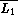 = {00, 01, 10, 11, 000, 001, ¼ }.
Ø È L = L for each language L. Similarly, Ø Ç L = Ø for each language L. On the
other hand, 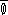 = S* and 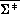 = Ø for each alphabet S.
The difference of L1 and L2, denoted L1 - L2, refers to the language that consists of all the strings that are in L1 but not in L2, that is, to { x | x is in L1 but not in L2 }. The cross product of L1 and L2, denoted L1 × L2, refers to the set of all the pairs (x, y) of strings such that x is in L1 and y is in L2, that is, to the relation { (x, y) | x is in L1 and y is in L2 }. The composition of L1 with L2, denoted L1L2, refers to the language { xy | x is in L1 and y is in L2 }.
Example 1.2.3 If L1 = {e, 1, 01, 11} and L2 = {1, 01, 101} then L1 - L2 = {e, 11} and L2 - L1 = {101}.
On the other hand, if L1 = {e, 0, 1} and L2 = {01, 11}, then the cross product of these languages is L1 × L2 = {(e, 01), (e, 11), (0, 01), (0, 11), (1, 01), (1, 11)}, and their composition is L1L2 = {01, 11, 001, 011, 101, 111}.
L - Ø = L, Ø - L = Ø, ØL = Ø, and {e}L = L for each language L.
Li will also be used to denote the composing of i copies of a language L, where L0 is defined as {e}. The set L0 È L1 È L2 È L3¼ , called the Kleene closure or just the closure of L, will be denoted by L*. The set L1 È L2 È L3 · · · , called the positive closure of L, will be denoted by L+.
Li consists of those strings that can be obtained by concatenating i strings from L. L* consists of those strings that can be obtained by concatenating an arbitrary number of strings from L.
Example 1.2.4
Consider the pair of languages L1 = {e, 0, 1} and L2 = {01, 11}.
For these languages L1 2 = {e, 0, 1, 00, 01, 10, 11}, and
L2 3 = {010101, 010111, 011101, 011111, 110101, 110111, 111101, 111111}. In
addition, e is in L1*, in L1 +, and in L2* but not in L2 +.
The operations above apply in a similar way to relations in S* × D*, when S and D are alphabets. Specifically, the union of the relations R1 and R2, denoted R1 È R2, is the relation { (x, y) | (x, y) is in R1 or in R2 }. The intersection of R1 and R2, denoted R1 Ç R2, is the relation { (x, y) | (x, y) is in R1 and in R2 }. The composition of R1 with R2, denoted R1R2, is the relation { (x1x2, y1y2) | (x1, y1) is in R1 and (x2, y2) is in R2 }.
Example 1.2.5
Consider the relations R1 = {(e, 0), (10, 1)} and R2 = {(1, e), (0, 01)}. For
these relations R1 È R2 = {(e, 0), (10, 1), (1, e), (0, 01)}, R1 Ç R2 = Ø,
R1R2 = {(1, 0), (0, 001), (101, 1), (100, 101)}, and R2R1 = {(1, 0), (110, 1), (0, 010), (010, 011)}.
The complementation of a relation R in S* × D*, or just the complementation of R when S and D are understood, denoted 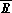, is the relation { (x, y) | (x, y) is in S* × D* but not in R }. The inverse of R, denoted R-1, is the relation { (y, x) | (x, y) is in R }. R0 = {(e, e)}. Ri = Ri-1R for i ³ 1.
Example 1.2.6
If R is the relation {(e, e), (e, 01)}, then R-1 = {(e, e), (01, e)}, R0 = {(e, e)}, and
R2 = {(e, e), (e, 01), (e, 0101)}.
A language that can be defined by a formal system, that is, by a system that has a finite number of axioms and a finite number of inference rules, is said to be a formal language.
It is often convenient to specify languages in terms of grammars. The advantage in doing so arises mainly from the usage of a small number of rules for describing a language with a large number of sentences. For instance, the possibility that an English sentence consists of a subject phrase followed by a predicate phrase can be expressed by a grammatical rule of the form <sentence> ® <subject><predicate>. (The names in angular brackets are assumed to belong to the grammar metalanguage.) Similarly, the possibility that the subject phrase consists of a noun phrase can be expressed by a grammatical rule of the form <subject> ® <noun>. In a similar manner it can also be deduced that "Mary sang a song" is a possible sentence in the language described by the following grammatical rules.
The grammatical rules above also allow English sentences of the form "Mary sang a song" for other names besides Mary. On the other hand, the rules imply non-English sentences like "Mary sang a Mary," and do not allow English sentences like "Mary read a song." Therefore, the set of grammatical rules above consists of an incomplete grammatical system for specifying the English language.
For the investigation conducted here it is sufficient to consider only grammars that consist of finite sets of grammatical rules of the previous form. Such grammars are called Type 0 grammars , or phrase structure grammars , and the formal languages that they generate are called Type 0 languages.
Strictly speaking, each Type 0 grammar G is defined as a mathematical system consisting of a quadruple <N, S, P, S>, where
<N1, S1, P1, S> is not a grammar if N1 is the set of natural numbers, or S1 is empty, because N1 and S1 have to be alphabets.
If N2 = {S}, S2 = {a, b}, and P2 = {S ® aSb, S ® e, ab ® S} then
<N2, S2, P2, S> is not a grammar, because ab ® S does not satisfy the requirement that
each production rule must contain at least one nonterminal symbol on the left-hand side.
In general, the nonterminal symbols of a Type 0 grammar are denoted by S and by the first uppercase letters in the English alphabet A, B, C, D, and E. The start symbol is denoted by S. The terminal symbols are denoted by digits and by the first lowercase letters in the English alphabet a, b, c, d, and e. Symbols of insignificant nature are denoted by X, Y, and Z. Strings of terminal symbols are denoted by the last lowercase English characters u, v, w, x, y, and z. Strings that may consist of both terminal and nonterminal symbols are denoted by the first lowercase Greek symbols a, b, and g. In addition, for convenience, sequences of production rules of the form
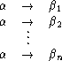
are denoted as
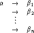
Example 1.2.8 <N, S, P, S> is a Type 0 grammar if N = {S, B}, S = {a, b, c}, and P consists of the following production rules.
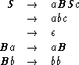
The nonterminal symbol S is the left-hand side of the first three production rules. Ba is the left-hand side of the fourth production rule. Bb is the left-hand side of the fifth production rule.
The right-hand side aBSc of the first production rule contains both terminal and
nonterminal symbols. The right-hand side abc of the second production rule contains only
terminal symbols. Except for the trivial case of the right-hand side e of the third
production rule, none of the right-hand sides of the production rules consists only of
nonterminal symbols, even though they are allowed to be of such a form.
Grammars generate languages by repeatedly modifying given strings. Each modification of a string is in accordance with some production rule of the grammar in question G = <N, S, P, S>. A modification to a string g in accordance with production rule a ® b is derived by replacing a substring a in g by b.
In general, a string g is said to directly derive a string g' if g' can be obtained from g by a single modification. Similarly, a string g is said to derive g' if g' can be obtained from g by a sequence of an arbitrary number of direct derivations.
Formally, a string g is said to directly derive in G a string g', denoted g Þ Gg', if g' can be obtained from g by replacing a substring a with b, where a ® b is a production rule in G. That is, if g = rad and g' = rbd for some strings a, b, r, and d such that a ® b is a production rule in G.
Example 1.2.9 If G is the grammar <N, S, P, S> in Example 1.2.7, then both e and aSb are directly derivable from S. Similarly, both ab and a2Sb2 are directly derivable from aSb. e is directly derivable from S, and ab is directly derivable from aSb, in accordance with the production rule S ® e. aSb is directly derivable from S, and a2Sb2 is directly derivable from aSb, in accordance with the production rule S ® aSb.
On the other hand, if G is the grammar <N, S, P, S> of Example 1.2.8, then
aBaBabccc Þ GaaBBabccc and aBaBabccc Þ GaBaaBbccc in accordance with the
production rule Ba ® aB. Moreover, no other string is directly derivable from
aBaBabccc in G.
g is said to derive g' in G, denoted g Þ G* g', if g0 Þ G · · · Þ Gg'n for some g0, ¼ , gn such that g0 = g and gn = g'. In such a case, the sequence g0 Þ G · · · Þ Ggn is said to be a derivation of g from g' whose length is equal to n. g0, ¼ , gn are said to be sentential forms, if g0 = S. A sentential form that contains no terminal symbols is said to be a sentence .
Example 1.2.10
If G is the grammar of Example 1.2.7, then a4Sb4 has a derivation from S. The derivation
S Þ G* a4Sb4 has length 4, and it has the form S Þ GaSb Þ Ga2Sb2 Þ Ga3Sb3 Þ Ga4Sb4.
A string is assumed to be in the language that the grammar G generates if and only if it is a string of terminal symbols that is derivable from the starting symbol. The language that is generated by G, denoted L(G), is the set of all the strings of terminal symbols that can be derived from the start symbol, that is, the set { w | w is in S*, and S Þ G* w }. Each string in the language L(G) is said to be generated by G.
Example 1.2.11 Consider the grammar G of Example 1.2.7. e is in the language that G generates because of the existence of the derivation S Þ Ge. ab is in the language that G generates, because of the existence of the derivation S Þ GaSb Þ Gab. a2b2 is in the language that G generates, because of the existence of the derivation S Þ GaSb Þ Ga2Sb2 Þ Ga2b2.
The language L(G) that G generates consists of all the strings of the form a · · · ab · · · b in which the number of a's is equal to the number of b's, that is, L(G) = { aibi | i is a natural number }.
aSb is not in L(G) because it contains a nonterminal symbol. a2b is not in L(G)
because it cannot be derived from S in G.
In what follows, the notations g Þ g' and g Þ* g' are used instead of g Þ Gg' and g Þ G* g', respectively, when G is understood. In addition, Type 0 grammars are referred to simply as grammars, and Type 0 languages are referred to simply as languages , when no confusion arises.
Example 1.2.12 If G is the grammar of Example 1.2.8, then the following is a derivation for a3b3c3. The underlined and the overlined substrings are the left- and the right-hand sides, respectively, of those production rules used in the derivation.
 | Þ | 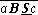 | ||
| Þ | aBc | |||
| Þ | aBa cc cc | |||
| Þ | aBa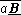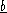ccc | |||
| Þ | a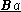a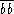ccc | |||
| Þ | a 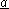bbccc 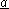bbccc | |||
| Þ | aabccc | |||
| Þ | aaa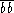bccc | |||
The language generated by the grammar G consists of all the strings of the form a · · · ab · · · bc · · · c in which there are equal numbers of a's, b's, and c's, that is, L(G) = { aibici | i is a natural number }.
The first two production rules in G are used for generating sentential forms that have the pattern aBaB · · · aBabc · · · c. In each such sentential form the number of a's is equal to the number of c's and is greater by 1 than the number of B's.
The production rule Ba ® aB is used for transporting the B's rightward in the
sentential forms. The production rule Bb ® bb is used for replacing the B's by b's, upon
reaching their appropriate positions.
Derivations of sentential forms in Type 0 grammars can be displayed by derivation , or parse, graphs. Each derivation graph is a rooted, ordered, acyclic, directed graph whose nodes are labeled. The label of each node is either a nonterminal symbol, a terminal symbol, or an empty string. The derivation graph that corresponds to a derivation S Þ g1 Þ · · · Þ gn is defined inductively in the following manner.
Example 1.2.13
Figure 1.2.1(a) provides examples of derivation trees for derivations in the grammar of
Example 1.2.7. Figure 1.2.1(b) provides examples of derivation graphs for derivations in the
grammar of Example 1.2.8.
|
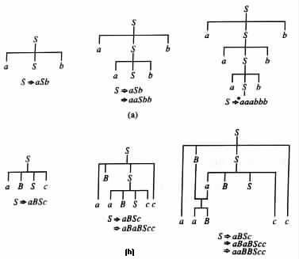
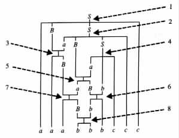
|
A derivation g0 Þ · · · Þ gn is said to be a leftmost derivation if a1 is replaced before a2 in the derivation whenever the following two conditions hold.
On the other hand, the following derivation is a leftmost derivation for a3b3c3 in G. The order in which the production rules are used is similar to that indicated in Figure 1.2.2. The only difference is that the indices 6 and 7 should be interchanged.
| 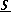 | Þ | 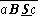 | ||
| Þ | a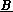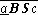c | |||
| Þ | a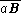Bcc | |||
| Þ | aaB 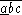cc 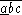cc | |||
| Þ | aa 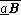bccc 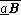bccc | |||
| Þ | aa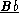ccc | |||
| Þ | aaa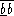ccc | |||
| Þ | aaabccc |

The following classes of grammars are obtained by gradually increasing the restrictions that the production rules have to obey.
A Type 1 grammar is a Type 0 grammar <N, S, P, S> that satisfies the following two conditions.
Example 1.2.15 The grammar of Example 1.2.8 is not a Type 1 grammar, because it does not satisfy condition (b). The grammar can be modified to be of Type 1 by replacing its production rules with the following ones. E is assumed to be a new nonterminal symbol.
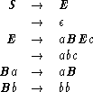
An addition to the modified grammar of a production rule of the form Bb ® b will
result in a non-Type 1 grammar, because of a violation to condition (a).
A Type 2 grammar is a Type 1 grammar in which each production rule a ® b satisfies |a| = 1, that is, a is a nonterminal symbol. A language is said to be a Type 2 language if there exists a Type 2 grammar that generates the language.
Example 1.2.16 The grammar of Example 1.2.7 is not a Type 1 grammar, and therefore also not a Type 2 grammar. The grammar can be modified to be a Type 2 grammar, by replacing its production rules with the following ones. E is assumed to be a new nonterminal symbol.
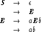
An addition of a production rule of the form aE ® EaE to the grammar will result in
a non-Type 2 grammar.
A Type 3 grammar is a Type 2 grammar <N, S, P, S> in which each of the production rules a ® b, which is not of the form S ® e, satisfies one of the following conditions.
A language is said to be a Type 3 language if there exists a Type 3 grammar that generates the language.Example 1.2.17 The grammar <N, S, P, S>, which has the following production rules, is a Type 3.
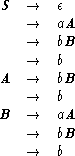
An addition of a production rule of the form A ® Ba, or of the form B ® bb, to the
grammar will result in a non-Type 3 grammar.
Figure 1.2.3 illustrates the hierarchy of the different types of grammars.
|
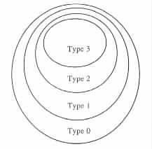
|